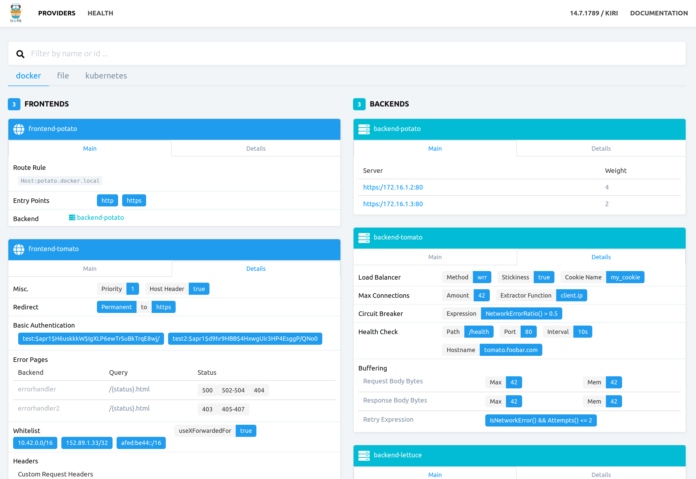
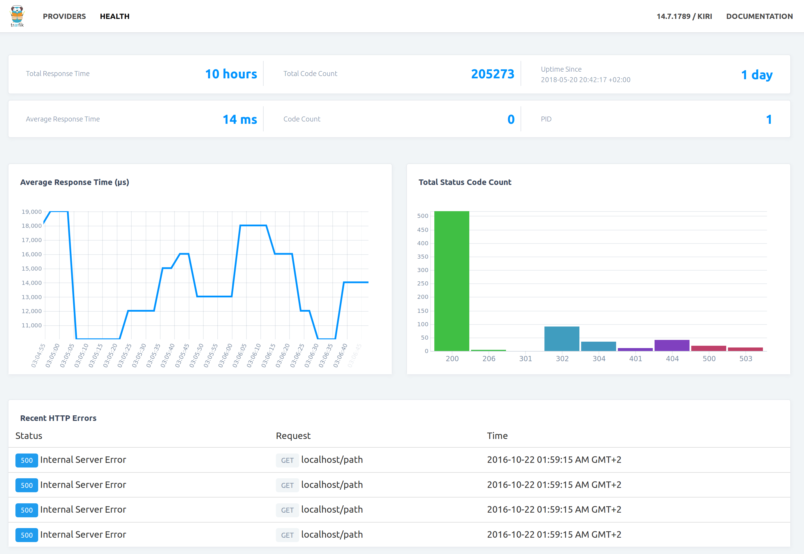

API Definition¶
Configuration¶
# API definition
# Warning: Enabling API will expose Traefik's configuration.
# It is not recommended in production,
# unless secured by authentication and authorizations
[api]
# Name of the related entry point
#
# Optional
# Default: "traefik"
#
entryPoint = "traefik"
# Enable Dashboard
#
# Optional
# Default: true
#
dashboard = true
# Enable debug mode.
# This will install HTTP handlers to expose Go expvars under /debug/vars and
# pprof profiling data under /debug/pprof/.
# Additionally, the log level will be set to DEBUG.
#
# Optional
# Default: false
#
debug = true
For more customization, see entry points documentation and the examples below.
Dashboard (Web UI)¶


Security¶
Enabling the API will expose all configuration elements, including sensitive data.
It is not recommended in production, unless secured by authentication and authorizations.
A good sane default (but not exhaustive) set of recommendations would be to apply the following protection mechanism:
- At application level: enabling HTTP Basic Authentication
- At transport level: NOT exposing publicly the API's port, keeping it restricted over internal networks (restricted networks as in https://en.wikipedia.org/wiki/Principle_of_least_privilege).
API¶
| Path | Method | Description |
|---|---|---|
/ |
GET |
Provides a simple HTML frontend of Traefik |
/cluster/leader |
GET |
JSON leader true/false response |
/health |
GET |
JSON health metrics |
/api |
GET |
Configuration for all providers |
/api/providers |
GET |
Providers |
/api/providers/{provider} |
GET, PUT |
Get or update provider (1) |
/api/providers/{provider}/backends |
GET |
List backends |
/api/providers/{provider}/backends/{backend} |
GET |
Get backend |
/api/providers/{provider}/backends/{backend}/servers |
GET |
List servers in backend |
/api/providers/{provider}/backends/{backend}/servers/{server} |
GET |
Get a server in a backend |
/api/providers/{provider}/frontends |
GET |
List frontends |
/api/providers/{provider}/frontends/{frontend} |
GET |
Get a frontend |
/api/providers/{provider}/frontends/{frontend}/routes |
GET |
List routes in a frontend |
/api/providers/{provider}/frontends/{frontend}/routes/{route} |
GET |
Get a route in a frontend |
<1> See Rest for more information.
Warning
For compatibility reason, when you activate the rest provider, you can use web or rest as provider value.
But be careful, in the configuration for all providers the key is still web.
Address / Port¶
You can define a custom address/port like this:
defaultEntryPoints = ["http"]
[entryPoints]
[entryPoints.http]
address = ":80"
[entryPoints.foo]
address = ":8082"
[entryPoints.bar]
address = ":8083"
[ping]
entryPoint = "foo"
[api]
entryPoint = "bar"
In the above example, you would access a regular path, dashboard, and health-check as follows:
- Regular path:
http://hostname:80/path - Dashboard:
http://hostname:8083/ - Ping URL:
http://hostname:8082/ping
In the above example, it is very important to create a named dedicated entry point, and do not include it in defaultEntryPoints.
Otherwise, you are likely to expose all services via that entry point.
Custom Path¶
You can define a custom path like this:
defaultEntryPoints = ["http"]
[entryPoints]
[entryPoints.http]
address = ":80"
[entryPoints.foo]
address = ":8080"
[entryPoints.bar]
address = ":8081"
# Activate API and Dashboard
[api]
entryPoint = "bar"
dashboard = true
[file]
[backends]
[backends.backend1]
[backends.backend1.servers.server1]
url = "http://127.0.0.1:8081"
[frontends]
[frontends.frontend1]
entryPoints = ["foo"]
backend = "backend1"
[frontends.frontend1.routes.test_1]
rule = "PathPrefixStrip:/yourprefix;PathPrefix:/yourprefix"
Authentication¶
You can define the authentication like this:
defaultEntryPoints = ["http"]
[entryPoints]
[entryPoints.http]
address = ":80"
[entryPoints.foo]
address=":8080"
[entryPoints.foo.auth]
[entryPoints.foo.auth.basic]
users = [
"test:$apr1$H6uskkkW$IgXLP6ewTrSuBkTrqE8wj/",
"test2:$apr1$d9hr9HBB$4HxwgUir3HP4EsggP/QNo0",
]
[api]
entrypoint="foo"
For more information, see entry points .
Provider call example¶
curl -s "http://localhost:8080/api" | jq .
{
"file": {
"frontends": {
"frontend2": {
"routes": {
"test_2": {
"rule": "Path:/test"
}
},
"backend": "backend1"
},
"frontend1": {
"routes": {
"test_1": {
"rule": "Host:test.localhost"
}
},
"backend": "backend2"
}
},
"backends": {
"backend2": {
"loadBalancer": {
"method": "drr"
},
"servers": {
"server2": {
"weight": 2,
"URL": "http://172.17.0.5:80"
},
"server1": {
"weight": 1,
"url": "http://172.17.0.4:80"
}
}
},
"backend1": {
"loadBalancer": {
"method": "wrr"
},
"circuitBreaker": {
"expression": "NetworkErrorRatio() > 0.5"
},
"servers": {
"server2": {
"weight": 1,
"url": "http://172.17.0.3:80"
},
"server1": {
"weight": 10,
"url": "http://172.17.0.2:80"
}
}
}
}
}
}
Cluster Leadership¶
curl -s "http://localhost:8080/cluster/leader" | jq .
< HTTP/1.1 200 OK
< Content-Type: application/json; charset=UTF-8
< Date: xxx
< Content-Length: 15
If the given node is not a cluster leader, an HTTP status of 429-Too-Many-Requests will be returned.
{
// current leadership status of the queried node
"leader": true
}
Health¶
curl -s "http://localhost:8080/health" | jq .
{
// Traefik PID
"pid": 2458,
// Traefik server uptime (formated time)
"uptime": "39m6.885931127s",
// Traefik server uptime in seconds
"uptime_sec": 2346.885931127,
// current server date
"time": "2015-10-07 18:32:24.362238909 +0200 CEST",
// current server date in seconds
"unixtime": 1444235544,
// count HTTP response status code in realtime
"status_code_count": {
"502": 1
},
// count HTTP response status code since Traefik started
"total_status_code_count": {
"200": 7,
"404": 21,
"502": 13
},
// count HTTP response
"count": 1,
// count HTTP response
"total_count": 41,
// sum of all response time (formated time)
"total_response_time": "35.456865605s",
// sum of all response time in seconds
"total_response_time_sec": 35.456865605,
// average response time (formated time)
"average_response_time": "864.8016ms",
// average response time in seconds
"average_response_time_sec": 0.8648016000000001,
// request statistics [requires --api.statistics to be set]
// ten most recent requests with 4xx and 5xx status codes
"recent_errors": [
{
// status code
"status_code": 500,
// description of status code
"status": "Internal Server Error",
// request HTTP method
"method": "GET",
// request hostname
"host": "localhost",
// request path
"path": "/path",
// RFC 3339 formatted date/time
"time": "2016-10-21T16:59:15.418495872-07:00"
}
]
}
Dashboard Statistics¶
You can control how the Traefik's internal metrics are shown in the Dashboard.
If you want to export internal metrics to different monitoring systems, please check the page Metrics.
[api]
# ...
# Enable more detailed statistics.
[api.statistics]
# Number of recent errors logged.
#
# Default: 10
#
recentErrors = 10
# ...
| Path | Method | Description |
|---|---|---|
/metrics |
GET |
Export internal metrics |